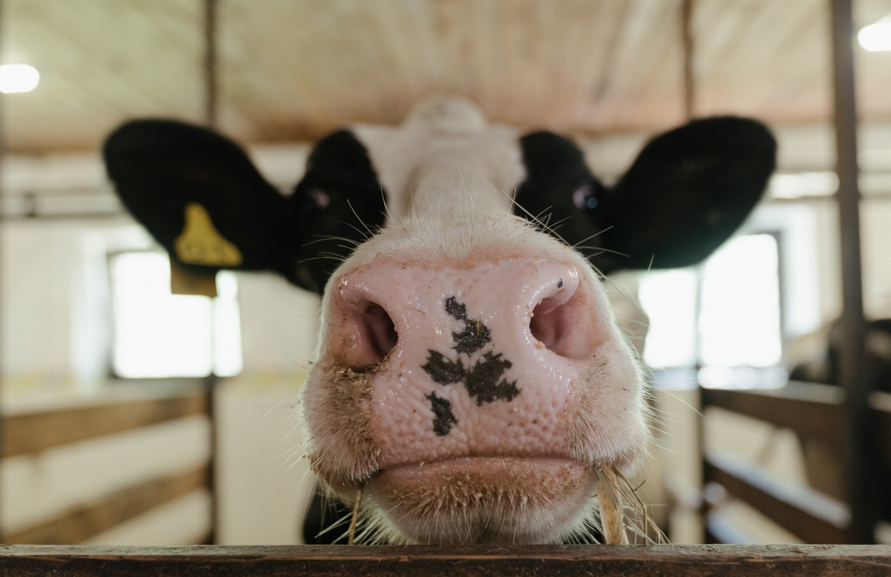

MILKING COWS
We use rotary milking parlors to keep moving.Every 7 seconds, a new steps on, and in 5-6 minutes is milked.Each cow has an RFID tag, so the computer konws which cow is in which stall, and howm much milk she's is producing.We use this information to help make sure she's healthly.Each cow is milked 3 times a day, producing about 7 gallons total.

HOW DO YOU KEEP THINGS CLEAN?
It takes five works to run the milking parlor.Antiseptic spray is applied to each cows treats, then cleaned off and dried, before milking. The milk is immediately filtered and cooled to 35 degrees, and pumped directly into milk tanker.And the entire milking parlor is given a top-down cleaning every 8 hours